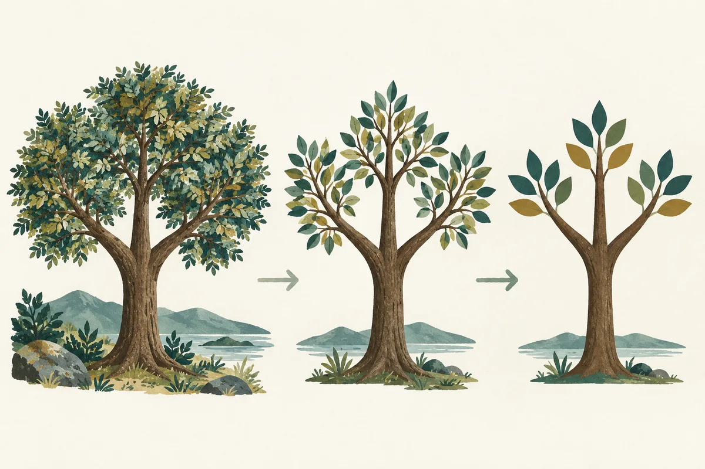

Competencia Lectora · Práctica gradual
Síntesis y relaciones en textos no literarios
Jerarquizar ideas y explicar cómo ejemplos, causas y condiciones construyen una explicación o una postura.
2 textos originales · 12 preguntas · Práctica y evaluación independiente · Sin límite de tiempo
Guía 2
Síntesis y relaciones en textos no literarios
12 preguntas · Sin límite de tiempo
Objetivo de la clase
Sintetizar textos no literarios, jerarquizando sus ideas y conservando las relaciones y los límites de lo que afirman.
¿Qué aprenderé a hacer?
- Separo la idea central de sus ejemplos.
- Reconozco relaciones entre las partes del texto.
- Redacto una síntesis que no amplía ni reduce indebidamente su alcance.
Instrucciones de trabajo · Antes de comenzar
Necesitas esta guía y tu cuaderno. Trabaja de forma individual; conversa sobre el ejemplo cuando el docente lo indique.
- Lee el objetivo, activa lo que sabes y observa el esquema y el ejemplo resuelto.
- Lee el primer texto completo y responde las preguntas 1–6: las ayudas disminuyen a medida que avanzas.
- En «Evalúa», lee un texto nuevo y responde las preguntas 7–12 sin consultar el esquema ni el modelado.
- Marca una alternativa A–D por pregunta. Usa «Marcar para revisar» si tienes dudas y vuelve al texto antes de decidir.
- En «Revisión y entrega», revisa el mapa. Se recomienda escribir una evidencia y explicar un descarte; estas reflexiones son opcionales y no impiden entregar.
- Comprueba «Guardado en línea» y pulsa «Entregar». La entrega cierra el intento; espera su confirmación. Cuando el docente publique los resultados, analiza los errores y realiza la transferencia.
Las actividades señaladas «En tu cuaderno» se trabajan fuera de la página; no se guardan automáticamente.
- 1Comprende el objetivo
- 2Observa el modelo
- 3Practica y aplica
- 4Revisa y entrega
- 5Analiza y transfiere
Aprende la estrategia · Explica y modela: ATENCIÓN
Activa lo que sabes · En tu cuaderno
Piensa en una noticia que hayas leído. En tu cuaderno, escribe su tema y luego su idea principal. ¿Son la misma cosa?
Comprende · Relaciona · Aplica
Sintetizar es conservar lo central y sus relaciones
Una síntesis expresa con menos palabras el núcleo de una sección o del texto completo. No es una lista de datos llamativos ni la primera oración recortada. Necesitas reconocer el tema, jerarquizar las ideas y conservar la relación que organiza la explicación.

Ilustración didáctica creada con IA · Escena ficticia, no evaluada
Lee la imagen · En tu cuaderno
¿Por qué resumir no equivale a dejar únicamente el tronco?
Contrasta tu observación
Porque también puedes perder relaciones esenciales. La selección depende del significado del texto: una condición o una explicación puede ser tan necesaria como las ramas que organizan el árbol. La imagen es una analogía, no una regla de borrar todos los detalles.
Abre los bloques en orden. Explica los conceptos con tus palabras y compara tus decisiones con el ejemplo antes de practicar. Estas comprobaciones son formativas: no tienen puntaje ni se guardan en línea.
1. Comprende los conceptos
Tema e idea principal
El tema responde «¿de qué se habla?» y suele nombrarse con pocas palabras. La idea principal responde «¿qué se sostiene sobre ese tema?». «Los huertos escolares» es un tema; «Los huertos permiten aprender ciencias mediante observaciones, pero requieren mantenimiento» expresa una idea.
Jerarquía y alcance
Una idea central organiza varias informaciones; un detalle la ejemplifica, precisa o respalda. Un dato muy concreto puede ser indispensable si cambia la conclusión. Distingue síntesis de párrafo y síntesis global: una respuesta local no resume necesariamente todo el texto.
Relaciones entre ideas
Causa y consecuencia explican por qué ocurre algo; problema y solución vinculan una dificultad con una respuesta; contraste presenta diferencias. Los conectores orientan, pero debes comprobar qué relacionan. Una síntesis que elimina un «aunque» importante puede convertir una afirmación limitada en una promesa absoluta.
2. Aplica la estrategia paso a paso
- Nombra el tema común
Tras leer completo, identifica qué asunto reaparece. No confundas el tema con el ejemplo más vistoso del primer párrafo.
- Anota la función de cada párrafo
Escribe una frase breve: presenta un problema, explica una causa, aporta un ejemplo o introduce un límite. Así reconoces cómo progresa la información.
- Selecciona y generaliza con cuidado
Agrupa ejemplos de la misma categoría y suprime repeticiones. Conserva condiciones, contrastes y resultados que cambian el sentido del conjunto.
- Redacta y verifica
Formula una oración que una tema y afirmación central. Comprueba que abarque las partes relevantes, no agregue opiniones y no sea tan amplia que sirva para cualquier texto.
3. Sigue un ejemplo razonado
Ejemplo de enseñanza · No pertenece a las preguntas evaluadas
La biblioteca extendió su horario dos tardes para quienes salen tarde de clases. Durante el primer mes aumentaron los préstamos, pero la asistencia fue baja los viernes. Por eso mantendrá la apertura del miércoles y probará otro día en lugar del viernes.
Pregunta del modelo
¿Qué síntesis conserva el propósito, la evidencia y el ajuste?
Pienso en voz alta
El tema es el horario de la biblioteca. El núcleo no es solo que prestó más libros: el texto explica una adaptación basada en resultados distintos según el día. Puedo omitir «primer mes» en una síntesis breve, pero no borrar el contraste que justifica cambiar el viernes.
Conclusión justificada
La biblioteca ajustará su horario ampliado para facilitar el acceso, conservando la tarde con mejor asistencia y reemplazando la menos concurrida.
4. Comprueba y prepara la práctica
Ahora explica tú · En tu cuaderno
¿«La biblioteca amplió su horario» resume todo el ejemplo o solo una parte? ¿Qué relación falta?
Revisa después de responder
Solo una parte. Falta que evalúa la asistencia y modifica su decisión a partir de esos resultados. Una síntesis global debe conservar esa relación entre evidencia y ajuste.
Prepara la transferencia
Prueba tu síntesis tapando los detalles del ejemplo. Si ya no puedes explicar por qué se tomó la decisión final, recupera la relación omitida. Aplica después esta comprobación al primer texto de la guía.
Si tu explicación no coincide, identifica el dato o la relación que omitiste. Vuelve al paso correspondiente y ensaya de nuevo antes de pasar a las preguntas.
- Detalles y ejemplosLeo el conjunto.
- Ideas relevantesSelecciono y relaciono.
- SíntesisExpreso la idea central.
Reducir la extensión no basta: una síntesis debe conservar la relación entre las ideas y los límites de la afirmación.
Otro ejemplo para consolidar
Revisa tus decisiones
El asterisco indica una pregunta marcada para revisar.
Puedes entregar con preguntas pendientes. Revisa el mapa antes de confirmar: la entrega cierra el intento.
Entrega confirmada
Las respuestas quedaron registradas. Los resultados se mostrarán cuando el profesor los publique.
Volver al portal PAESCierre de la clase · En tu cuaderno
Escribe una síntesis de dos oraciones en tu cuaderno y explica qué detalle decidiste omitir.
Contrasta tu explicación con los criterios del objetivo. Esta reflexión no modifica tus respuestas ni se guarda en línea.
Analiza el error y transfiere
Este resultado describe esta actividad; no equivale a un puntaje PAES.
Vuelve a tus respuestas. Compara tu evidencia con la explicación de cada alternativa y escribe una regla para no repetir el error.
Resuelve la transferencia en tu cuaderno. No modifica el intento entregado.